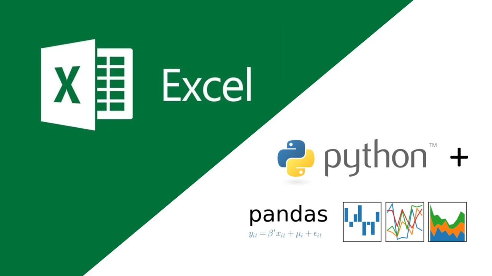

flowchart TD A[1. Definir pregunta] --> B[2. Cargar datos] B --> C[3. Explorar estructura] C --> D[4. Limpiar y transformar] D --> E[5. Resumir y visualizar] E --> F[6. Interpretar resultados] F --> G[7. Documentar y compartir] classDef step fill:#F0F4F8,color:#0F2044,stroke:#4A9FD4; class A,B,C,D,E,F,G step;
¿Te ha pasado esto?



¿Qué aprenderemos?

- Entender el flujo de trabajo: desde datos crudos hasta resultados comunicables.
- Usar notebooks: combinar código, texto, tablas y gráficos en un solo lugar.
- Manipular datos: cargar, filtrar, transformar, resumir y ordenar información.
- Visualizar patrones: explorar datos con Matplotlib y Seaborn.
- Compartir el trabajo: publicar notebooks y proyectos con GitHub.
Google Colab

- Notebook: documento vivo con celdas de texto y código.
- Sin instalación: basta una cuenta de Google y navegador.
- Resultados: ideal para tareas, laboratorios e informes.
- Compartible: se puede enlazar con GitHub.
Ejemplo: Google Colab

NumPy

- Trabaja con arreglos y matrices.
- Realiza operaciones matemáticas rápidas.
- Evita escribir ciclos innecesarios.
- Es la base de muchas librerías científicas de Python.
pandas

- Lee archivos CSV, Excel y fuentes web.
- Organiza datos como tablas llamadas
DataFrame. - Filtra, transforma, ordena y agrupa información.
- Es la herramienta central para manipulación de datos en Python.